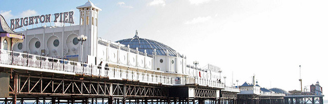

Hello, I’m Jenn.
My home is Yorkshire, England.
Designed by Freepik
A Brief Intro
Currently I'm working as a Graphic Designer for a web based company, with hopes and plans to push futher into the digital world.
I was born and riased in Brighton on the south coast of England, since leaving University I have moved to live in York.
Goals
My current plan, aim and focus for the future is to continue to grow my digital based skills. My first step towards this has been to enrol on the Front-End Web Development course with Team Treehouse.
Skills I want to gain:
- HTML
- CSS
- JavaScript
- UX/UI